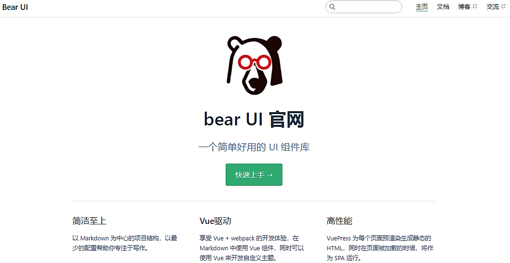
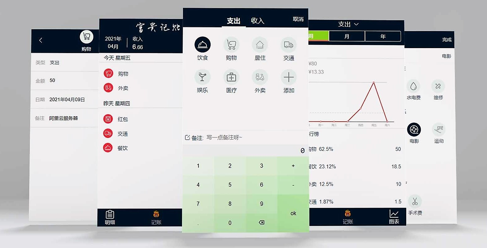
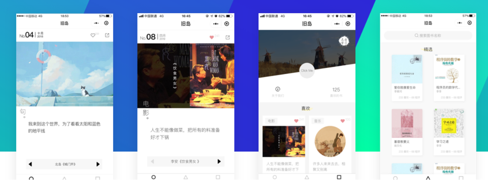

项目经历
-

项目介绍:该项目是参照Ant Design、Element UI、iView 等 UI 库思路，做的一套基于 Vue2 的简易UI 组件库 。目前已支持8个基础组件，更多组件尚在开发中。 每个组件均经历从需求分析、调试、单元测试，发布于npmjs.org。 完成该项目使我对 Vue 的常用特征更加熟悉，同时提升了自己对前端工程化流程的深刻理解，近一步了解开源文化。技术栈：JavaScript/ Vue2 / Travis CI / chai / SCSS / ES6 /
-

项目介绍:富贵记账是一款极简的记账产品，由本人独立设计并采用Vue 2.6 +TypeScript开发实现。实现功能: 项目共包含 总览，日期，记账，统计 四个页面，实现了记账、数据可视化、账单统计、以及按照不同选项进行排序。亮点: 使用 原生 JS Date 对象 封装了日历组件（实现对每一天的数据记账信息查看） eventBus 进行传值技术栈：TypeScript/Vue2/Vue Router/Echart/Yarn/ES6/SCSS
-

项目介绍: 简单时光 是一个书籍音乐鉴赏类的微信小程序，分为 前端和 后端两个部分。前端实现: 全部采用 自定义组件的开发方式。 包括三个主要页面和十余个自定义组件，使用了很多组件高级特性：如 Slot插槽、 Behavior行为、 externalClass外部样式、 组件事件传递等。
后端接口: 使用 Node.js,Koa2和MySQL 实现服务器的API接口和数据库的增删改查。 熟悉了 JS的async与await的使用，Koa的异步编程模型、洋葱模型和Koa中间件的应用，理解Node.js在Web架构中的作用。项目开发阶段遇到了很多困难，但同时学习到了很多debug 的方式。亮点: 在熟悉小程序的前端业务后，继续学习了Koa2去开发后端的API接口，最后前后端去对接数据，对一个项目前后端的对接有了一个基本的认知.技术栈：Node.js/Koa2/MySQL/Validator/Sequelize -
项目介绍:doraemon是一个使用原生JS开发的，动态显示 CSS 画一个哆啦 A 梦过程的小作品。该作品主要思路是通过间隔计时器遍历预先设置样式代码，将其一个个显示在页面上，并在 style 标签上作同样处理，以使代码 CSS 生效。此外增加调速按钮，以增加用户体验亮点: 遵循 面向对象 的思想：对 JS 代码进行封装
-
项目介绍: 画板是一个使用 原生Canvas 开发的，可以自定义画画的作品。该作品主要思路是通过 根据用户的鼠标或者触摸获取当前位置， 将其显示在页面上，此外增加 修改颜色，画笔宽度，清空画板，保存按钮 ，以增加用户体验。支持 PC 和 手机端。


开源项目
-
1.实现简易jQuery-封装DOM库
项目介绍:该项目是本人在学习原生DOM编程和jQuery过程中，参考jQuery的核心思想对原生DOM进行的一个简易封装，加深了我对DOM与jQuery的理解，并写了一篇个人博客记录总结。
工作经历
2020.10 - 2021.10
青岛海之晨工业装备有限公司